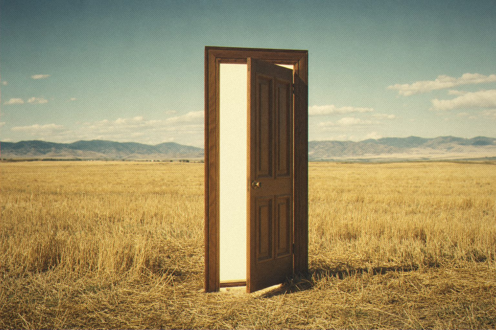

Twenty years of sounds were waiting behind it.
Since 2002 the open-source community has made thousands of patches for ZynAddSubFX. Its ADDsynth, SUBsynth and PADsynth engines are unlike anything else.
Zynabre is the same engine, ported module by module to Rust. It opens your original .xiz and .xmz files and plays them the way Zyn does, and that was measured sample for sample.
It has sixteen parts, sixteen kit items and the whole effect rack, all inside a new editor. Abre is Portuguese for “it opens.”

Every patch you ever saved, still playable.
Zynabre
ZynAddSubFX, rebuilt in Rust.
Open source · AU · VST3 · CLAP
Jardim SonoroOpen-source audio research
Download: jardimsonoro.com/audioSource & issues: github.com/nagualcode/zynabre
Synthesizers05